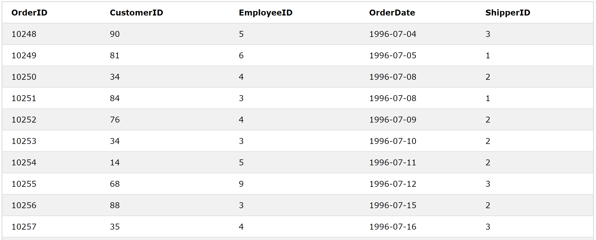
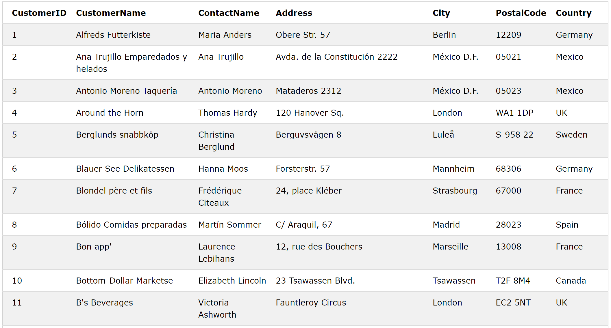
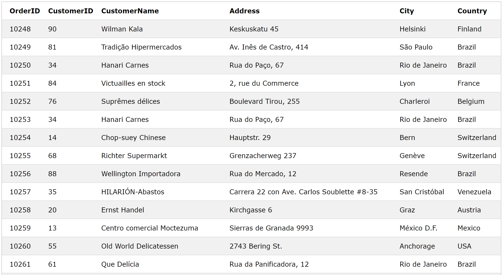

There are several different types of JOINs in SQL.
INNER JOIN
LEFT JOIN
RIGHT JOIN
FULL OUTER JOIN
INNER JOIN selects all rows from two (or more) participating tables until there is
no match between the columns.
Syntax:
SELECT *
FROM table1
INNER JOIN table2
ON table1.column_name = table2.column_name;
How does INNER JOIN work:
The INNER JOIN gets a certain field name and finds it in two (or more) tables
using comparison operator. In other words, we will give a search condition, and
INNER JOIN will return what satisfy our search condition.
Example:
There are two tables, "Orders" and "Customers". We can only see customer ID from the
first table and customers' information from the second table. If we want to match
the order ID and its correspoding customer's information, we can use INNER JOIN by
using "CustomerID" as the search condition because it is the only common field that
appears in both tables.


SELECT o.OrderID, o.CustomerID, c.CustomerName, c.Address, c.City, c.Country
FROM Orders AS o
INNER JOIN Customers AS c
ON o.CustomerID = c.CustomerID
